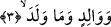

hitâbı Hz. Peygamber (a.s.)’adır. O’nun adının Kur’ân’da bazen açık bazen kinâye
yoluyla dört bin defa geçtiği ve zikredildiği söylenmiştir.
“Ey Muhammed, sen Mekke’de bulunduğun ve orada kaldığın halde bu beldeye yemin
ederim.”
Allah Teâlâ Mekke’nin fazîletinin fazlalığını ortaya koymak için Mekke’ye yeminini
Hz. Peygamber (a.s.)’ın orada bulunması ile kayıtlamıştır. Çünkü Mekke’nin kendisi
şerefli iken ulu ve şerefli Hz. Peygamber (s.a.)’in orada bulunmasıyla şerefi daha da
artmıştır. Şerefi olmayan bir mekan şerefli bir kimsenin oraya yerleşmesiyle şerefli hale
gelir. Ama zaten kendisi şerefli olan bir mekan şerefli birisinin oraya gelmesiyle var
olan şerefini daha da arttırır. Hz. Peygamber (a.s.)’ın ayak bastığı Mekke, Medine ve
diğer yerlerin hürmetinin muhâfaza edilmesi gerekir. Hz Peygamber (a.s.) Medîne’ye
“Tâbe” adını vermiştir.[99] Çünkü Medine O’nun sâyesinde ve orayı mekan tutmasından
dolayı hoş ve güzel hale gelmiştir.
Bu âyette Mekke halkına bir dokundurma vardır. Çünkü onlar câhilliklerinden dolayı
Mekke’nin şerefine daha fazla şeref katan bir kimseyi oradan çıkarmayı istiyorlar ve
O’na eziyet ediyorlardı.
Ey gelmen bereketiyle Kâbe’ye yüz şeref veren
Ey tertemiz ayağınla ölülere yüz safa bağışlayan
Mekke senin nûrunun doğmasıyla aydınlandı
Medîne senin ayağının toprağıyla hayat buldu.
Âyette insânî vücud Mekke’si beldesine ve onun sol tarafında bulunan kalb Rasûlüne
işâret vardır.
3. Babaya ve ondan meydana gelen çocuğa yemin ederim ki,
“Babaya” bu ifâde yukarda geçen “el-beled” kelimesi üzerine atfedilmiştir. “Baba”
ile İbrâhim (a.s.) kasdedilmiştir. Kelimenin nekre getirilmesi ululuğunu ortaya koymak
içindir.
“Ve ondan meydana gelen çocuğa yemin ederim ki” Buradaki “çocuk”tan maksad
Hz. İsmâil (a.s.)’dır. Çünkü o İbrahim (a.s.)’ın arada herhangi bir vâsıta olmaksızın
çocuğudur. Bizim peygamberimiz Muhammed (a.s.) de Hz. İbrahim’in İsmâil (a.s.)
vâsıtasıyla çocuğudur. Dolayısıyla bu sûrede iki yerde Hz. Peygamber (a.s.)’a yemin
edilmiş olmaktadır.
Âyette “men” yerine “mâ”nın tercih edilmesi Allah’ın ona verdiği kemâle taaccüb
mânâsını belirtmek içindir. Tıpkı “Oysa Allah, onun ne doğurduğunu daha iyi bilir”
(Âl-i İmrân, 3/36) âyetinde olduğu gibi. Yâni Allah onun durumu hayret uyandırıcı bir